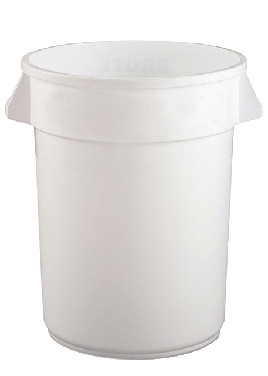
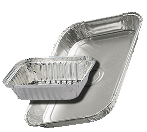
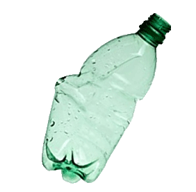
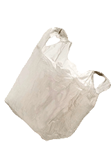
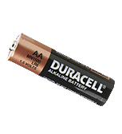
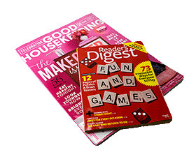
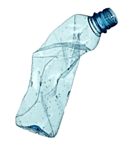
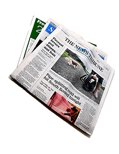
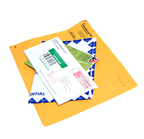
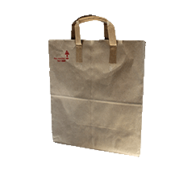

Metal
metal cans (soup, pet food, empty aerosol cans, empty paint cans, etc.)
aluminum foil and foil products (wrap and trays)
metal caps and lids
household metal items (wire hangers, pots, tools, curtain rods, small appliances that are mostly metal, certain
vehicle license plates, etc.)
bulky metal items (large metal items, such as furniture, cabinets, large mostly metal appliances, DOES NOT
INCLUDE electronic devices banned from disposal)
Plastic
plastic bottles, jugs, and jars
rigid plastic caps and lids
rigid plastic food containers (yogurt, deli, hummus, dairy tubs, cookie tray inserts, “clamshell” containers,
other rigid plastic take-out containers)
rigid plastic non-food containers (such as “blister-pack” and “clamshell” consumer packaging, acetate boxes)
rigid plastic housewares (flower pots, mixing bowls, plastic appliances, etc.)
bulk rigid plastic (crates, buckets, pails, furniture, large toys, large appliances, etc.)
Note: Rigid plastic is any item that is mostly plastic resin—it is relatively inflexible and maintains its shape
or form when bent.










Paper
newspapers, magazines, catalogs, phone books, mixed paper
white and colored paper (lined, copier, computer; staples are ok)
mail and envelopes (any color; window envelopes are ok)
receipts
paper bags (handles ok)
wrapping paper
soft-cover books (phone books, paperbacks, comics, etc.; no spiral bindings) (schools should follow their school
book recycling procedures)
Cardboard
cardboard egg cartons
cardboard trays
smooth cardboard (food and shoe boxes, tubes, file folders, cardboard from product packaging)
pizza boxes (remove and discard soiled liner; recycle little plastic supporter with rigid plastics)
paper cups (waxy lining ok if cups are empty and clean; recycle plastic lids with rigid plastics)
corrugated cardboard boxes (flattened and tied together with sturdy twine)
Not Accepted
Paper with heavy wax or plastic coating (candy wrappers, take-out and freezer containers, etc.)
Soiled or soft paper (napkins, paper towels, tissues)
Hardcover books (schools should follow their school book recycling procedures)
Batteries
Electronic devices banned from disposal
Printer cartridges
Glass items other than glass bottles and jars (such as mirrors, light bulbs, ceramics, and glassware)
Window blinds
Foam plastic items (such as foam food service containers, cups and trays, foam protective packing blocks, and,
and foam packing peanuts)
Flexible plastic items (such as single-serve food and drink squeezable pouches and tubes such as toothpaste,
lotion, cosmetics, or sports balls such as basketballs, bowling balls, soccer balls, footballs, yoga balls)
Film plastic (such as plastic shopping bags and wrappers.) Bring plastic bags and film to participating stores
for recycling
Cigarette lighters and butane gas lighters
Cassette and VHS tapes
Pens and markers
“Tanglers” (such as cables, wires, cords, hoses)
Rigid plastic containers containing medical “sharps” or disposable razors
Containers that held dangerous or corrosive chemicals